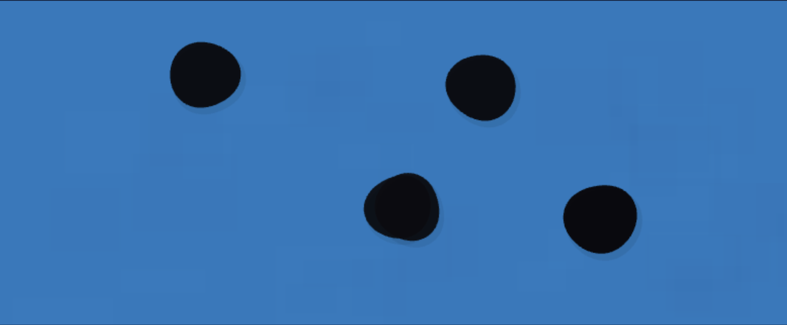
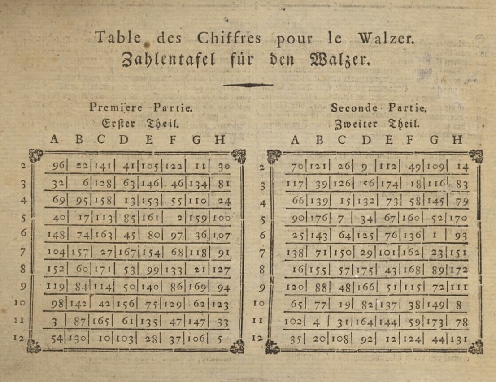
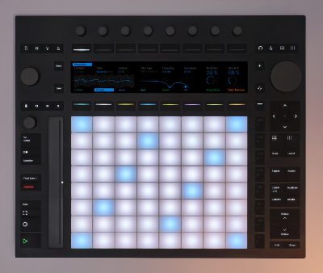
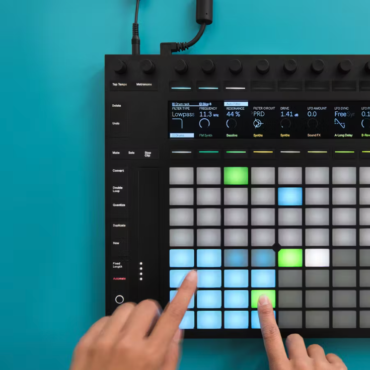

Introduction
Imagine the piano had never been invented. And then one day you walk into a room. And there it is. This instrument you’ve never seen before. You sit down. You press a key and a note sounds. Then you press another key, and a different note sounds. You press those keys together and the two notes sound at the same time.
You sit back. Think. And realize the enormity of the possible combinations that are in front of you. You can’t put them together yet. You can’t imagine most of them. That will take other people with other imaginations. But you can see that this new instrument, now it’s actually there, offers more than just one note, or one piece of music.
I already feel that way about democracy in music. Once it’s in front of you, the possibilities within it seem close to limitless. I’m going to give you a few examples here. Press one key and then another and then maybe a couple together. Show you what I think makes this instrument special.
The true potential of the system is well beyond my grasp. I didn’t build this system. I walked into a room and there it was. This is what I’ve found so far.
30,000 People Sit Down at a Piano
Anita and Dev don’t know each other and cannot see each other but both have the same digital piano in front of them. This piano only works if two or more people play it. You cannot play it alone. So Anita plays C4 and Dev plays G4, but something weird happens. Instead of hearing C4 and G4 played simultaneously, they hear E4, the note in the middle. They keep on playing, but, instead of hearing the note they played, they hear the mean note, the one right between. A few more people join the server, so now we have multiple people equally responsible for input, and the output is always the mean. Let’s add more people until we have 30,000 people. Now we have a piece of music being written by 30,000 people simultaneously.
This music would be very boring to listen to. It would only be a melody, and using the mean would end up with everything centering around the middle of the keyboard. Let’s put the flaws of the model to the side for the moment and talk about what just happened.
30,000 people democratically composed a piece of music together for the first time in human history.
It was democratic, in that it was equally made by all participants—no participant’s choice had more weight than another’s.
The resulting music is, from a songwriting perspective, equally owned. In terms of IP, this piece of music is automatically and equally owned by 30,000 people. In the EU that copyright remains with its creators.
The people making the music were also its first audience. They could not know what the outcome would be. They were not only its creators but its first listeners.
The barrier to entry is low. Either it is 0 because the program is super easy to make and it is made freely available, or incredibly low because the cost is split between 30,000 participants.1
Using the mean is not very practical but already demonstrates a completely novel way of making music. Using the mode as an average provides far more possibilities for composition and more closely maps to the democratic process. There is no limit to its scalability for human or machine interaction. Using the mode, players of the piano could play a note, and, tabulated within a certain timeframe, the most chosen note(s) would get heard. This method is impractical at very small scales, but useful as you get into dozens of people. Using the mode we have a new set of possibilities:
By moving the threshold, we can create harmony as well as melody, by allowing multiple “votes” to be heard.
Because it maps to the democratic process, through experimentation, iteration, and derivation, we can run experiments in democratic decision making.
People will get adept at democratic decision making in low-stake areas outside of politics.
Now people have a personal investment in the music they hear. In negotiations with major labels, Spotify, et al., 30,000 people who feel invested in their work have a much better chance than a singular artist.
There are parallels in collaborative governance in Loren Carpenter’s “PONG” experiment, and Twitch Plays Pokémon. Game makers have strayed into this territory before. However, it could be used to make music, paintings, games, and so much more.
This is the “piano” that I describe above. You can play it and see what the outcomes are. Once you get used to the idea, you can move away from an instrument you already know and start looking at what this might look like as a function of voting changes over time. This next prototype follows the same concept as the piano above, but might help you get a new perspective on it.
Mean Mode also contains an additional element that’s of interest to me. You can see how voting publics might swing from one position to another, how choices change as various options gain in popularity.
Owning Cultural History:
Asset Managers or Communities
I imagine a 3D voter graph, looked at from above, converted to something like a Joan Miró dot painting (Landscape, 1968). A number of Miró paintings contain dots, islands in the wider sea of the canvas. (See his Bleu triptych for blue islands in larger blue seas). That was one artist placing single dots on a canvas. Imagine those dots are choices made by 100,000 people. What might they mean now?
You could imagine these dots representing the various choices made by voting publics. Multiple dots would represent multiple highly ranked choices representing top-n frequency selection, quite close to how proportional representation works.
I think this is quite exciting. And beautiful.2

Excerpted image from the MIRO prototype
Let’s talk about ownership for a moment. Currently, it is rare for a people to own their cultural history. Music is most commonly owned by the individuals or small groups who create it, corporations, or trusts. Paintings are most often owned by private collectors, trusts, or the state. As an example, all of Leonard Cohen’s music is owned by Recognition Music Group under Blackstone, an American asset management company. Joan Miró’s Bleu II above is owned by the Musée National d’Art Moderne in Paris, which is funded by the French state. Regardless of the rightness or fairness or legality of how cultural history is owned, the people who see it as their cultural history rarely have much to do with its curation or profit. The above models would change that because entire populations of all descriptions (local, digital, institutional, national, etc.) could co-create and co-own their cultural products.
And this ownership could last longer than just the few years after creation. Most projects last as long as the lifetimes of their creators, if not much shorter (I had originally titled this section “Beyoncé Will Die”). However, collective projects based on the above models could last for generations, as members of these collectives pass the baton to the next generation. It could be the quite literal ownership of cultural history.
Here is what generational ownership could look like.
The legal and institutional questions involved in these ideas are genuinely hard. Who registers a piece of music owned by 30,000 people with a royalty collection service? Who negotiates a sync license? Who sues for infringement? Existing intellectual property law was built for individual authors and corporate assignees, not for collective and cumulative creation. There are emerging models, like platform cooperatives, creative commons licensing, and blockchain-based provenance systems, but none have found mainstream traction yet. Perhaps it will require an entirely new legal conception of ownership. Luckily, there are many people working on this issue, and I look forward to hearing their responses to this particular set of problems.
From the Aleatoric to the Communal
The above examples represent art in which the composition process is entirely democratic. However, similar systems could allow voting publics to co-create pieces with composers, producers, and pop stars. I imagine something akin to the “Musikalische Würfelspiele” of the 1700s. In these games, composers wrote music where each bar, or set of bars, could be joined to any other bar or set to create a coherent piece of music. Players would gather together and roll dice to determine in which order the bars would be attached, creating a unique piece of music partially composed and partially created by chance.
Below is a chart for one of these games (and here’s one you can play yourself). You will notice that the grid layout is not dissimilar to Ableton’s Push controller (below), which allows producers to stack melodies and harmonies they have composed in advance to introduce new combinations and variations. There is a reason for this similarity. The music of the Classical period tended to be metrically and harmonically stable in comparison to the previous Baroque or later Romantic periods. Similarly, today’s club music is almost always in 4/4 and does not deviate harmonically or by tempo, and so you can change harmonic and melodic blocks within a single composition. Pop is more nuanced (it has verses and choruses for instance), but each section is also normally relatively stable harmonically, and so adding and subtracting different elements in a mix using Push is also easy.
At the moment, these choices are made by individuals manipulating their own or other people’s samples. What would it be like to have audiences collaborate democratically in that process, voting on chunks of sound?3



A musical dice game and Ableton’s Push controller
In a networked version, a composer or group of musicians might create those blocks of sound. However, a generative AI model could also produce the musical phrases, the voting public responding in real time to shifting iterations. Holly Herndon created a potential blueprint for this concept with Holly+, an AI trained on her voice that individuals can license for their work. The voice is Herndon’s, the creative decisions belong to whoever uses it, but the chain of creation stays linked to the originating artist. Something like this could work for collective composition: not individuals licensing an artist’s work for private use, but voting publics licensing it for collective use. An artist could make catalogues of their work or voice, beats or loops available for collective music making. Artist and voting publics retain a stake.4
There are also a few ways to think about the voting itself. Quadratic voting introduces strength of preference: you can vote multiple times for the same option, but each vote becomes more expensive.5 Connection-oriented voting gives more weight to agreement across groups that otherwise differ than to agreement within groups that already agree.6 For music, this matters: a system that flattens toward the majority produces averaged results. A system that rewards cooperation across difference produces something stranger, more plural, and more like what happens when people with genuinely different taste find common ground.
The prototypes in this guide move from simple aggregation toward more plural mechanisms. But the logical endpoint may be non-linear aggregation altogether, where collective input passes through neural networks that can read patterns in preference that voting cannot capture. In this framing, a well-trained neural network is not a black box but a more fluent form of democracy, one that can read patterns in collective intelligence.7 Whether this would still feel like democracy to the people participating is an open question, and all of the prototypes in this guide are currently designed so you can see how your input shaped the outcome.
However, for a musician approaching these tools for the first time, those distinctions don’t necessarily have to matter yet. The question is simply: what would it sound like if you produced the sound/loop/beat/song and gave your audiences the chance to compose it with you? What might that mean to your fans or to you?
You could compose a symphony this way. An audience votes, an orchestra plays what the audience chose, and new choices emerge from what came before. Or I imagine using something like Imogen Heap’s MiMu gloves to affect various parameters in a DAW, from tempo and volume to key and note choice but in concert rather than alone.
Or tracking the motion of dancers. When we think about choreography, we normally think about dance set to music. In traditional choreography, a composer produces a piece, or a dance group chooses a pre-written composition (anything from Tchaikovsky to Mitski), and choreographs a dance to it. Often, there is a choreographer in charge of that choreography. Dance has a long history of pushing against this hierarchy, from Bausch’s question-based process to Paxton’s Contact Improvisation, but even in these cases the resulting work was either authored by the choreographer or ephemeral. Democracy is not only about casting votes. It is about being acknowledged and represented. A piece of music that is co-created by people moving through space could be, in this sense, deeply democratic.
So I imagine composers, dancers and choreographers as joint composers of a piece of music. You sit in an audience. The lights come down. A dancer comes on stage and their movements correlate perfectly with the sound you hear. Other dancers enter and the music changes, develops. When the dancers are in lock step the music takes on a recognizable pattern. When they fall out of step, the music could take on dissonance, or desync. This is dancers composing in real time. Cameras catching their movements and transcribing them into virtual representations triggering realtime changes in a preconceived aural space.8
This introduces the idea of bodies in space as co-composers of pieces of music. The body as musical instrument. In other variations of this principle, partygoers at a club might modulate things like tempo, amplitude, frequency of a producer’s set. Maybe they would also trigger various elements of a set. One could imagine a whole number of interactions along a spectrum from full co-composition to slight modulation.
I do not imagine these projects as “interactive art.” I see them as ways for different art forms to influence one another, and for audiences to become part owners of the work they hear. These are collaborative efforts between composer/songwriter/producer, performers, and audience that would invite new ways of understanding music-making, one that erases the line between “product” and “consumer” and makes art making a more obviously collaborative, collective, and communal process.9
Practice
I hope you have found this as fun as I have. There is an element of this process that is simply exploratory and creative, and I hope it can be a joy to experiment with. Various thinkers have, however, suggested that democracy at large scales requires democracy at smaller scales—that without the engagement of citizens at their local levels, large-scale democracies become bureaucratic placeholders for what would otherwise be collective decision making.
Democracy is having a rough go at the moment. One of the potential side effects of this project is in allowing people to practice democracy in low-stakes settings, where deliberation is the outcome of an exciting communal discovery. I am a musician and so have chosen music. You may be a gamer or writer, a sculptor or chess player. Experiments of this kind could introduce more people to democratic concepts playfully, lightly, and in a way that makes democratic decision making, its mechanics and consequences, a felt experience for those for whom democracy might normally be a vote once every few years, or for those who have never voted at all. There is no moral claim here. It would simply be wonderful to offer the collaborative joys, rather than the polarizing stresses, of collective decision making.
Conclusion
For me, this project has been something like seeing a piano for the first time and realizing how many songs can be played on it. But I’m a beginner and so not sure what all the possibilities might be. The prototypes I’ve provided here are for single players with voting publics imagined in code. But I hope they will inspire people like you to pick up these tools and make networked versions of your own ideas (or these ones if you like). This work is open to anyone to grab and run with. Don’t be shy.
I hear a lot of talk about how our digital worlds are harmful to democracy. I spend a lot of my time writing and thinking about it. Here, however, we can build digital worlds that introduce democracy into creative life in low stakes, collaborative environments where people can make new art while honing the craft of democratic decision making. And, with luck, when people have learned how to enjoy and practice democratic governance in one arena, they will be more likely to care about it in another.